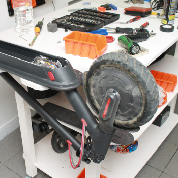
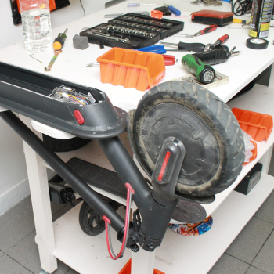

Посмотрите
видео-знакомство 2 мин
Предоставить полный ассортимент современной продукции Kugoo Kirin, которая улучшает и упрощает жизнь. Cтремимся подарить комфорт и эмоции, поэтому помогаем с выбором и внимательно относимся к сервисному обслуживанию.
и заботимся об удобстве покупателей
Выбирайте товар, который подходит по цене и характеристикам. Если товара нет в наличии — мы сообщим вам о его поступлении.
Вы можете оплатить покупку наличными, картой, онлайн на сайте, через интернет-банкинг или в кредит от «Сбербанка».
При покупке вам выдается кассовый чек, товарный чек и гарантийный талон – эти документы дают право на гарантийное обслуживание.
Отправляем заказы по всей России день в день или забирайте товар самостоятельно в магазинах в Москве, Санкт-Петербурге и Краснодаре
В нашем магазине можно приобрести любой товар в рассрочку.
Подробнее про условия рассрочки
Устраним любую неисправность. Обычно делаем это за 1-3 дня, если ремонт сложный — предупредим заранее.
Покроем электросамокат изнутри специальным веществом, которое предотвратит попадание влаги и позволит кататься в любое время года.
Не навязываем услуги, диагностируем и заранее обговариваем стоимость ремонта.
Благодаря прямой связи с производителем имеем в наличии все необходимые новые комплектующие для ремонта.
Специалисты сервисного центра подготавливают самокаты к отправке вам, проводят техническое обслуживание, тюнингуют и при необходимости ремонтируют их
Консультант сервисного центра сопровождает васна протяжении всего времени эксплуатации и помогает решить возникающие вопросы.
Руководитель сервисного центра
Заместитель директора
Менеджер по продажам
Мастер по ремонту самокатов

 



Оцените все преимущества самокатов лично
Знаток города 2 уровня
23 сентября 2020Магазин очень понравился, быстро обслужили, персонал хорошо знает свой товар, вежливо и грамотно консультирует, ассортимент внушительный, а если чего нет сейчас в наличии, то можно без проблем заказать на сайте, так что всем рекомендую!
Знаток города 2 уровня
23 сентября 2020Магазин очень понравился, быстро обслужили, персонал хорошо знает свой товар, вежливо и грамотно консультирует, ассортимент внушительный, а если чего нет сейчас в наличии, то можно без проблем заказать на сайте, так что всем рекомендую!
Знаток города 2 уровня
23 сентября 2020Магазин очень понравился, быстро обслужили, персонал хорошо знает свой товар, вежливо и грамотно консультирует, ассортимент внушительный, а если чего нет сейчас в наличии, то можно без проблем заказать на сайте, так что всем рекомендую!
Знаток города 2 уровня
23 сентября 2020Магазин очень понравился, быстро обслужили, персонал хорошо знает свой товар, вежливо и грамотно консультирует, ассортимент внушительный, а если чего нет сейчас в наличии, то можно без проблем заказать на сайте, так что всем рекомендую!
Знаток города 2 уровня
23 сентября 2020Магазин очень понравился, быстро обслужили, персонал хорошо знает свой товар, вежливо и грамотно консультирует, ассортимент внушительный, а если чего нет сейчас в наличии, то можно без проблем заказать на сайте, так что всем рекомендую!
Знаток города 2 уровня
23 сентября 2020Магазин очень понравился, быстро обслужили, персонал хорошо знает свой товар, вежливо и грамотно консультирует, ассортимент внушительный, а если чего нет сейчас в наличии, то можно без проблем заказать на сайте, так что всем рекомендую!
Знаток города 2 уровня
23 сентября 2020Магазин очень понравился, быстро обслужили, персонал хорошо знает свой товар, вежливо и грамотно консультирует, ассортимент внушительный, а если чего нет сейчас в наличии, то можно без проблем заказать на сайте, так что всем рекомендую!
Узнайте больше о самокатах Kugoo и посмотрите сравнительные
обзоры разных моделей на нашем YouTube-канале.
Самый быстрый Kugoo.Электросамокат Kugoo G1 New 2020. Распаковка обзор и замер скорости.
Kugoo M4 PRO - РЕАЛЬНЫЙ ОПЫТ использования // Плюсы и минусы электросамоката Kugoo
Обзор электросамоката Kugoo S1. Новинка 2020 года.
Мощный и полноприводный Kugoo G1! Обзор электросамоката и тест-драйв на улице! Стоит ли покупать?
Электросамокат KUGOO G1 PRO - обзор, ТЕСТ-ДРАЙВ, характеристики, ИСПЫТАНИЯ, РАЗБОРКА
Kugoo GX vs Kugoo G1. Быстро или очень быстро. Электросамокаты Kugoo.
Известный китайский бренд Kugoo является одним из самых популярных фирм, которая выпускает электрические самокаты разных моделей и ценовых ниш.
28.01.2022860Электрический транспорт за последние годы стал довольно популярным среди людей всех возрастов. Он экологически безопасен для окружающей среды, при этом на нем можно с комфортом ездить по городу на большие расстояния.
26.01.2022952Дисплей на электрическом самокате предназначен не только для красоты. Он отображает элементы управления и настройки транспорта.
24.01.2022666Некоторые владельцы электросамокатов сталкиваются с проблемой, когда аккумулятор не заряжается, либо сразу показывает 100%-ный заряд. Эта неполадка возникает в начале сезона, либо после «залива» транспорта.
22.01.2022854
Каждый современный человек не только хочет выделиться из толпы своей внешностью, но и украсить личное транспортное средство. Кто-то перекрашивает автомобили, занижает их, другие — тюнингуют электросамокаты.
20.01.2022512Многие будущие райдеры, выбирая электросамокат, задаются вопросом: как далеко на нем можно уехать? На данный вопрос нельзя дать однозначного ответа.
18.01.2022967При покупке электросамоката у нас, вам выдается кассовый чек, товарный чек и гарантийный талон – эти документы дают право на гарантийное обслуживание на законодательном уровне. Наши сервисные центры находятся в Москве, Санкт-Петербурге и Краснодаре. В случае поломки вы можете обратиться туда. Если вы живете в городе, где нет нашего сервисного центра, то наш специалист поможет решить вопрос удаленно. Он сможет понять какая запчасть вышла из строя и отправит ее вам, если вы сможете сами заменить ее. Если удаленно решить вопрос не удастся, специалист создаст трек номер и попросит вас отправить самокат транспортной компанией CDEK. Транспортировку Товара (с ремонта/на ремонт) Покупатель оплачивает самостоятельно или осуществляет доставку Товара до СЦ своими силами и за свой счет. В соответствии со ст. 20 ФЗ «О защите прав потребителей» на ремонт по гарантии дается не более 45 дней. В городах, где есть наш сервисный центр ремонт проводится за 3-7 дней.